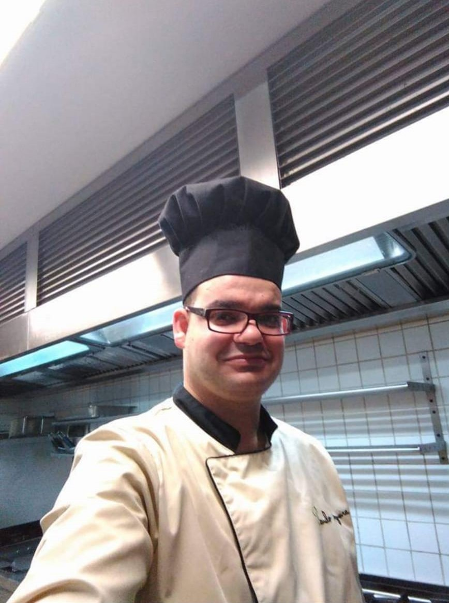

<div class="content">
<div style="margin-left:11%; margin-right: 11%; margin-top: 5%;">
    <h1 style="text-align: left; font-size: 25px; font-weight: 700; margin-top: 30px; margin-bottom: 20px;">Alimentação</h1>
    <div style="height: 400px; margin-top: 20px; font-size: 17px;">
        O aumento do consumo de fast food e alimentos industrializados é um dos grandes vilões da atualidade. 
        Além disso, a correria do dia a dia e as mudanças do estilo de vida da população tem contribuído diretamente para a baixa qualidade da alimentação. 
        <p></p>
        Problemas como a obesidade e doenças cardíacas são cada vez mais frequentes e possuem relação direta com a falta de uma alimentação saudável.
        <p></p>
        <p>
        Nesta área poderão encontrar informações sobre nutrição e uma 
            alimentação saudável, assim como várias receitas fáceis de elaborar, deliciosas, saudáveis e com todos os nutrientes necessários.
        </p>

        <b> A nossa equipa é composta por: </b> <br> <br> <br>
        <div class="row">
            <div class="column col-12 col-md-12 col-log-12" style="text-align: center;">
                
                <p></p>
                <b>Paulo Peixoto</b>
                <p style="font-size: 13px;">“Aos 17 anos comecei a trabalhar num café snack-bar e dois anos depois imigrei para França. Várias viagens realizei entre Portugal e França e já fiz um pouco de tudo, fui picheleiro, trabalhei nas obras e passei pela área das limpezas. As saudades do meu país bateram e decidi voltar de vez, onde fui gerente de um café de família. Infelizmente, por motivos pessoais fui obrigado a procurar um novo desafio e em outubro de 2007 candidatei-me como copeiro e empregado de mesa de um restaurante. O mais engraçado é que na altura não sabia o significado de copeiro e foram nove meses assim. Mais tarde, passei a fazer saladas e sobremesas, cinco anos depois promoveram-me a pizzaiolo e após dois anos deram-me a oportunidade de mostrar o meu valor como chef. 13 anos depois aqui continuo eu, a conquistar corações com os meus menus e sem nunca desistir dos sonhos.”
                 </p>
                 <p></p> <p></p>    
            </div>
        </div>
    </div>
</div>
</div>